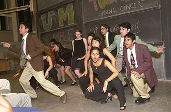
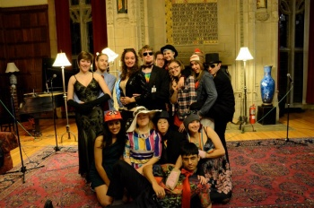
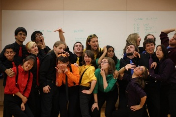
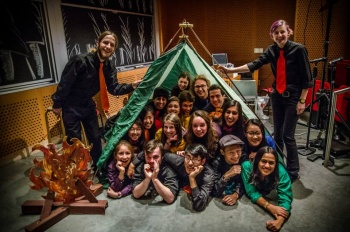

A Brief History of Nearly Every Toon
Perhistory
In 1990, the Wellesley students Jen Pogue and Becca Arnal had the idea to start a cross-campus a cappella group with MIT. Together with MIT’s Rich Villanueva and the other charter members, they got the group off the ground. Originally, the group was pretty straight-shooting, as can be seen in early pictures of members in their concert garb of blue blazers and dresses.
1993–1994
The fall of 1993 brought eight new members, owing mostly to the fact that several members were away for the term. Soon after, the Toons officially adopted the “bright color and black or jeans” concert attire. And the Toons were singing lots of newer music, like the now classic “Take On Me,” and old music, like “Feelin’ Groovy,” our signature song. This year was also marked by the beginning of the “Jen and Rich” photo tradition, in which Jen Harris and Rich Villanueva pose provacatively at every Toons happening for pictoral historians, the “Mmmm…potato chips!” skit, and the graduation of the last remaining founding members.
1994–1995
The 1994-95 year marked our first performance at the MIT Parents’ Weekend A Cappella Concert (now called GBIS – the Greater Boston Invitational Songfest), the Chorallaries’ Bad Taste Concert, and our first overnight road trip in two years, to Colgate University. As usual, we had concerts at both schools during both the fall and spring terms, which included the famed “Wellesley College Rules” skit (much better than “Mmmm…potato chips!”) and the greatest number of alums in the audience ever (three).
The Toons also hit the Internet with their new World Wide Web page. The year was marked by a performance at the Museum of Fine Arts for their celebration for the re-opening of the Huntington Avenue entrance, and the recording of “Target Practice,” the first public release of recorded Toons music. On July 2, 1995, the Toons had their “airwaves” debut, as CKUT included “Son of a Preacher Man” from the album “Target Practice” in the “NAKED VOICE” show (CKUT FM 90.3 (Cable 91.7) Montreal, QC). Other concerts that year included the Brown Bear Necessities’ Acapallooza, and WPI’s songfest.
It was this year that the target symbol which decorates the cover of our first albumn, Target Practice, was developed. It began (and remains) the universal symbol for Jen Harris. During one of our skit development sessions, one member (the reticent Liz Parker) remarked that she did not find a particular joke funny, which found the response “You’re not our target audience.” Liz asked who our target audience was, and it was that moment that Jen chose to walk into the room and utter a particularly engaging Jen-ism, exemplifying herself as typifying a member of our target audience. The point became graphically illustrated when either Neil Renninger or Howard (we’re not sure which) drew the now-famous target symbol, and placed “Jen” at the center of it.
1998–2001

The year 1998 brought the release of the Toons second studio album, 59th Street Bridge. Soon after this album premiered, the Toons were performing such classics as “The Mario Skit.” The fall of 2000 brought seven new jingles, and brought Toons membership up to 19 for the semester. Although these delinquents did not produce a jingle skit, they did manage to create a very colorful breakfast at Fall Retreat 2000.
Under director Charles Floyd, the “real” changing of the millennium brought with it the Toons third studio album, Holding Our Own, recorded at Newbury Sound in Boston. With 17 tracks, the new album was an epic, and was released at the Spring 2001 concert. This monumental achievement was only surpassed by Ryan Manuel’s ability to cackle like the Joker in front of a packed Kresge Auditorium, and Mike’s famous “Holy 10-dollar Muses CD.”
Memorable songs from 2000-01 include the “Disney Medley,” and “How Deep Is Your Love.” These were thoroughly bastardized at the Chorallaries’ 2001 Bad Taste concert, which the Toons trashed in true cross-dressing style. Skits that year included the Teenage Mutant Ninja Turtles Skit, in which Ryan brilliantly played the Pizza Monster, and the Batman Skit, in which Kieran was just “wrrrrrrrrrrrrrong!”
The end of Spring 2001 marked the departure of two beloved members, Jeremy Cheng and Sawaka Kawashima.
2001–2002
Fall 2001 brought two new members, and brought our membership back to a booming 19. Fall 2001 was characterized by the repeated singing of “All I Want” by Neil Basu against his will, and the beginning of the “Not An Addict” time period, during which time Nikhila Deo became more recognizable as “that hot girl who sings the druggie song” than the G&W bus on a Saturday night. That Fall also saw a very well attended concert in 54-100, a room that became synonymous with the words, “DEAD SEXY!” yelled backstage before any performance. The “TV Sitcom Medley” premiered during Fall 2001, as did the blockbuster “Billie Jean,” the biggest choreography number ever seen by a Toons audience, masterfully done by David Ngo.
Spring 2002 saw the Toons on a tour of the East Coast. Toons drove down to Atlanta and stayed in good ole Peach Tree City before heading back up to sing at Duke, American U, and the Empire State Building. As always, tour included an illegal pee stop for Deb that ended with police involvement. The Spring 2002 concert marked the end of an era, when we said goodbye to five members: Neil Basu, Jocelyn Warner, Janaki Wickrema, Niyati Gandhi, and David Ngo, whose Xtreme Box skit will live on for all time. Spring 2002 Elections also saw the end of Charles Floyd’s two-year reign as director (WOW!) and the beginning of the Toons Scrap Book.
2002–2003

Fall 2002 brought three new members, and the beginning of a new recording project. Director Brooke Bryant incorporated lots of choreography into our set that semester, and created the “machine” in the Zephyr Song. She also popularized the word “jar” for generations of Toons to come. Songs that semester included “The Freshmen,” “My Favorite Mistake,” and “Adia.” Skits included the Email Skit featuring Strongbad, and the Lord of the Rings/8 Mile skit that displayed the rapping ability of Charles and Gautam. Fall 2002 also began the true Microphone Era, which was propogated by the generous alum gift that Spring of a set of microphones :).
Spring 2003 began with goodbyes from several long time Toons: Charles Floyd, Gautam Jayaraman, and Cecilia Lam. Toons were much smaller this semester, with only 13 members, but still managed to compete at ICCA Regionals in February 2003. Mike Stevens received a “Hot Lips” Vocal Percussion award at the competition. Toons worked heavily on their fourth studio album, All Jokes Aside. The semester was best known for “The Romp Skit,” penned by Brooke, featuring such Wellesley campus favorites as the Rugby Team scene, and Mike’s infamous ad-lib. Stephen Larson was the brains behind the Pac Man skit, a colorful true-to-the-real-thing presentation with a feminist heart. Spring 2003 ended with goodbyes to four dedicated Toons: Brooke Bryant, Casey Muller, Stephen Larson, and Deb Dasgupta.
2003–2004

Fall 2003 brought a ton of new jingles! This semester Neelima, the newly elected director, took Toons to the Big Blends Concert in Maine, among other fun road trips. The Toons had (have) a particular knack for getting the worst possible rental cars this semester but it always turned into a laugh and a good time by the end of the trip. This fall concert was marked with awesome Toons costumes and the Aqua hit (arranged by Claire Gross) “Cartoon Heroes”.
Spring Semester 2004 the Toons went on an awesome Toons Tour all over the East Coast. We sang with groups including the Prinecton Nassoons, Upenn Off the Beat, and Emocappella (of George Washington University) to name a few. This was also the tour of the “Please touch museum”. You can talk to Mr. Mike Stevens about this experience. We also said goodbye to another enormous class. This included Toon devotees Kieran Pechter, Nikhila Deo, Neelima Teerdhala, Claire Gross, Patrick Kim, Heather MacDonald, and Brian Wong. It was a tearful goodbye but we’re sure these smart and talented alums will be amazing in their future careers!
2004–2009
Soon, our recent alums will reminisce about their years in the Toons and leave their mark on history… well, at least, on this history page.
2009–2010

Fall 2009 brought some awesome jingles! This semester we had some great hits such as Knock You Down with our freakin awesome Pimp Ship, the greatest choreo of all time, and Obsessed with You, which showed the world how crazy the Toons actually were. This semester introduced the new Jingles to “Toons Moments.” The best moment of the time was moment wood pecker, which would be remembered forever. The semester ended with the dramatic Glee themed concert in which we had wonderful props and costumes. We somehow managed to even acquire a wheel chair. This was one of the first skits that told a continuous story throughout the skits, and started an era of epic stories to be told.
Spring 2010 was the Toons 20th Anniversary Concert. A wonderful group of about 15 of our alums came and sung with the current group. They sang Be Prepared from the Lion King (sung by the one and only Mike Mock), Not An Addict, and My Favorite Mistake. It was really an experience that the current Toons would never forget. For the concert, the alums and the current Toons together sang Video Killed The Radio Star in a giant, 30 Toon group. It was epicness! Other cool things brought by that semester were the were the idea that if each Toon were a pokemon, what sounds would they make, and the tradition of too many Toons cramming into one bed. The bar was set at 7. This would be create a challenge for generations to come! At the end of the year, the Toons said goodbye to two wonderful seniors, Richard Yau and Leslie Nachbar. Unfortunately, by the end of this year, apart from 2 graduating seniors,the group said goodbye to 13 other Toons for various reasons. The five remaining members would work hard to recreate Toons and make it what they’ve always wanted it to be.
2010–2011

Fall 2010 brought a huge and wonderful jingle class of 9 Jingles! The best part about this Jingle class was how much they loved each other and Toons as soon as they became Toons. The remaining five Elders, and the current Jingle class would go on to become closer than Toons has ever been; they became family. The Toons sung great songs like Double Rainbow by the Gregory Brothers which included Donald hilariously ripping off his “Tooniform” to reveal a bright yellow Double Rainbow t-shirt underneath. During retreat this semester, the Toons visited the Ben and Jerry’s factory in Vermont, and proceeded to sing for everyone that we met. The semester skits were about what happens when the Most Interesting Man in the World (Tom Hu) and the Man Your Man Could Smell Like (Donald Guy) team up to battle then world’s least manliest “man”, Justin Bieber! [Justin grudgingly played by 8-Ball Reyes. Bieber link? No. I only link to awesome.] This skit beautifully ended with Donald Guy accidentally exposing his bare chest to Wellesley in the middle of a song instead of revealing the Double Rainbow t-shirt, but forgot to put it on because he was too distracted by the amazing Jingle skit, the wild Barbershop Quartet seen in its natural habitat.
Spring semester that year, the Toons went on an awesome tour to Disney World, and performed in Downtown Disney. This semester brought with it TWO new Disney arrangements! Go the Distance, and Just Can’t Wait to Be King were two great songs. A new Toons tradition was born this semester. This tradition was created in order to correct an increasingly common misconception, reassuring everyone that Toons is not a cult. “TOONS IS NOT A CULT! TOONS IS NOT A CULT! TOONS IS NOT A CULT!” Really, we’re not… The ridiculous skits of this concert may or may not have been written the day of the concert. The theme was “Toons on a Rock”. It followed the adventures of Tom and Zach while they were trapped on a desert island all by themselves, or so they thought. This year, the group said goodbye to two members that we’ll never forget, Yuri Lin and Tom Hu.
2011–2012

Fall 2011 brought the Toons a fresh new wave of Jingles! This semester had some awesome songs such as Kids by MGMT and the Christina Grimmie and Sam Tsui version of Just A Dream. The retreat that fall is remembered for about half the group devouring a Vermonster on the ground at the parking lot in front of Ben and Jerry’s. The group finished the semester off with Wikipedia: The Concert! The concert script was immortalized by an employee of Wikipedia who attended the concert. The original script can be found at: http://en.wikipedia.org/w/index.php?title=User:Sj/WPtC&oldid=463913478.
That spring was kicked off with a teaser concert at Wellesley entitled Awkward Prom! There were rainbow onsies, nipple tape, and sock monkey hats! This semester will also be remembered for the group’s many performances of the Pokemon Theme song! Because of this song, the Toons made it on to the front cover of the Tech and the Wellesley News that semester! This semester ended with singouts for seniors Donald Guy, Chris “8-Ball” Reyes, and David Lerner.
2012–2013

The Toons started this semester with an awesome retreat when, while hiking, a bunch of Toons stripped down and jumped off of a ledge into a pool in a river below … IN NOVEMBER! There were no towels to dry off with so the group had to use the warmth of their Toons Love to stay warm before heading back to the house. The group sang great songs such as Some Nights by fun. and the World Cup Mashup (Waka Waka and Wavin’ Flag)! This semester’s teaser concert was one where the characters consisted of each Toon’s cartoon character. I’m sure the audience was extremely confused, but all the Toons wanted was to have fun! The theme of the semester concert was Avada Capella where the characters were inspired by Harry Potter as well as a Very Potter Musical. The Jingle skit this semester was a very memorable one because of Dana Gretton’s “Spoilers Rap”.
Something happened in Spring 2013, but it seems to have been lost to memory…
2013–2014

We welcomed four new jingles this year and kicked off the fall semester with a retreat to Plymouth, MA, where we communed with history and stared touristily at Plymouth Rock. We also made friends with some spunky kids in a playground (future Toons, maybe?). We tried to sing to them but they asked their parents to make us stop.
Our fall concert theme was Toons Go Camping, which featured an actual gorilla suit, as well as a narrated mockumentary. Live on film, we caught the wild thesis in its natural environment, attacking our beleaguered seniors. The jingles sang a four-chord mashup song with ukelele accompaniment instead of preparing a real skit, but everyone loved it anyway. Finally, we sang goodbye to our beloved Zach Casas, and closed the concert by breaking the record for “most toons in a tent.”
Spring 2014 brought our famous “TV DINNER” concert, which featured Trevor Mulchay microwaving and eating an authentic TV dinner live on stage while playing Flappy Bird. We ventured into rap with a rendition of Macklemore’s “Can’t Hold Us” (featuring shark-related choreography) and sang a choral piece about the perils of big data with “Hymn of Acxiom.” Finally, we said tearful goodbyes to seniors Esther Jang, Sruthi Narayanan, Cheetiri Smith, and Lauren Richmond.
2014-2015
We welcomed four more beautiful jingles and continued our unfortunate path into absurdity with our fall concert, TOONS IS NOT A CULT, which kicked off in darkness with a slow procession of Toons covered with paper bags, followed by 15 minutes of uninterrupted silence. We sang songs by Feist, Yellow Ostrich, the XX, Phoenix, and Misterwives (maybe this was the year we hit a turning point into hipsterdom). Fall 2014 also marked the great Reign of Edwin, who served concurrently as MIT President, MIT Business Manager, MIT Publicity Chair, Skit Director, Webmaster, and head of the Choreo Committee. (never again. with great power…)
Our spring concert was a reunion concert! We welcomed back alums from all of Toons history to celebrate our 25th anniversary with the concert theme ONLY NINETIES KIDS. We kicked off the night with the debut of our alum a cappella group, the OUT OF TOONS, followed by a huge, high-energy, combined performance of our Waka Waka/Waving Flag mashup. Sandwiched by ample nineties references (“welcome to good burger, home of the good burger…”) we also sang two Queen classics, Somebody to Love and Under Pressure, and said farewell to Rachel McDermott, Trevor Mulchay, Sarah Garvey, and Matt Joss.
2015-2016

Fall 2015 brought us five wonderful jingles: Max, Margie, Maggie, Serena, and Avery! We ended the semester with a tastefully edgy TOONS NOIR concert, featuring tastefully edgy covers of Every Other Freckle by alt-J, Wisely and Slow by the Staves, Nature Boy by Nat King Cole/Eden Ahbez, and…Herp de Derp by schmoyoho? Well, anyway…
Spring 2016 started off with an overnight trip to Smith College’s Silver Chord Bowl competition in Northampton, where we were graciously hosted by the Avery's family. We also had the pleasure of making some new friends with another cross-campus a cappella group: Counterpoint A Cappella, from Bryn Mawr and Haverford! After some singing in Lobby 7 we went to Unos together, ate way too much pizza, and then wandered around Harvard Square for the rest of the night. At the end of the semester, we channeled our inner philosophers to conjure up our spring concert theme, TOONS HAS A DEEP THOUGHT, and said farewell to Dana Gretton, Merry Mou, Jyotishka Biswas, and Edwin Zhang.